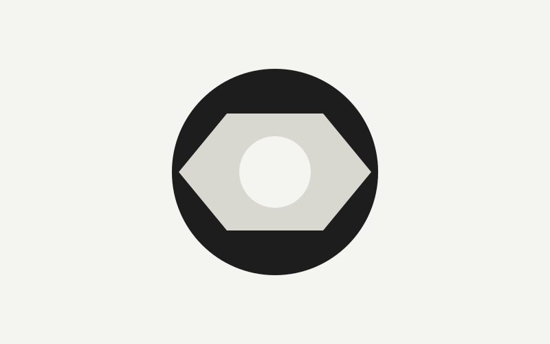
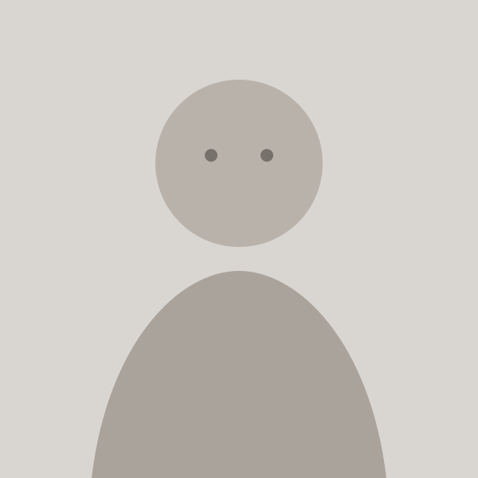

cover
产品 / 新闻封面
容器必须被完整填满，允许裁切图片边缘。适合卡片封面、案例图、博客缩略图。
CSS DEVELOPMENT LAB · 06
图片不应该只靠 `width: 100%`。不同场景需要不同的比例、裁切和对齐策略。 本实验集中比较产品图、Logo、头像与 Banner 的常见处理方式。
FOUR COMMON CASES
重点不是记属性，而是建立判断：什么时候应该裁切，什么时候必须完整显示， 什么时候需要改变视觉焦点。
容器必须被完整填满，允许裁切图片边缘。适合卡片封面、案例图、博客缩略图。

内容必须完整显示，不允许裁掉主体。适合 Logo、图标、包装图、部分电商主图。

保持正方形或圆形容器，用 `cover` 填满，再用 `object-position` 调整人物焦点。
Banner 常常会被裁切，此时可以把视觉焦点偏向左侧、右侧、顶部或自定义位置。
COVER VS CONTAIN
`cover` 优先“填满容器”，`contain` 优先“完整显示图片”。 两者没有谁更高级，关键取决于业务场景。
先定义容器比例，再让图片适配容器，页面结构会更稳定。
决定图片如何填充容器：裁切填满，还是完整显示。
决定裁切发生时保留哪个视觉区域，常用于人物、Banner、产品焦点。